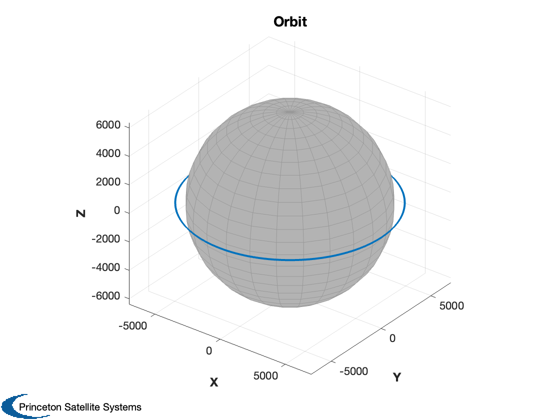
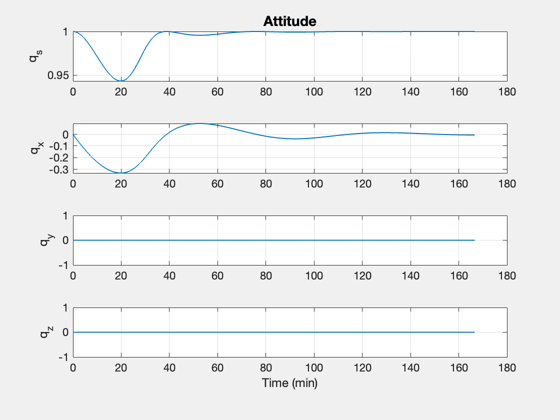
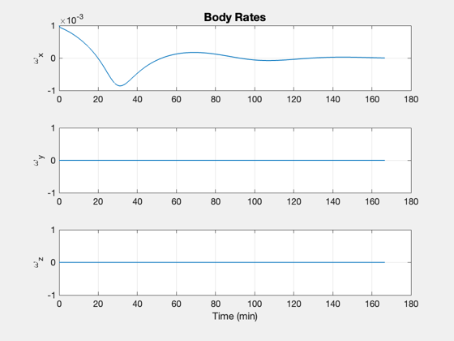
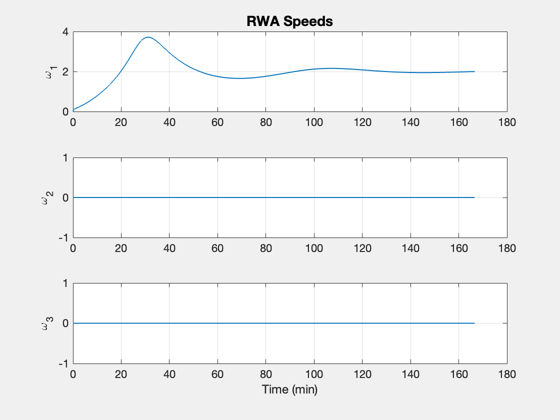
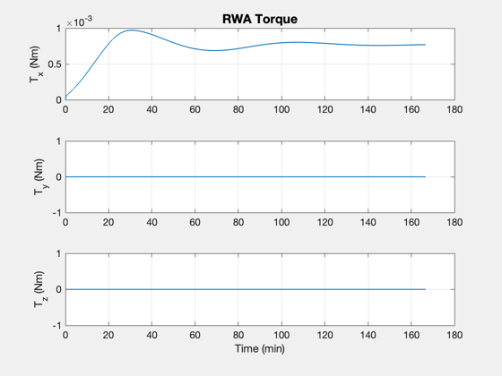
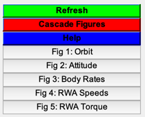

An attitude and orbit simulation with reaction wheels.
This simulation includes reaction wheels with Coulomb friction and damping. It is easy to specify the damping terms for each wheel. The demo also includes the PID3Axis controller. The core dynamics is for a gyrostat orbiting around a point mass.
The base demo is the step response around y. This is a constant external torque that will cause the momentum to grow. The controller drives the transient error to zero. Note that the Coulomb friction causes limit cycling around zero wheel speed, an artifact of the model.
Things to do:
- Try varying the friction in the reaction wheels.
- Try different control modes.
- Try different disturbances.
- Give the controller a different target quaternion.
- Give the spacecraft nonzero initial body rates.
------------------------------------------------------------------------ See also RHSSpacecraftWithRWA, PID3Axis, Plot2D, RK4 ------------------------------------------------------------------------
Contents
%-------------------------------------------------------------------------- % Copyright (c) 2015 Princeton Satellite Systems, Inc. % All rights reserved. %--------------------------------------------------------------------------
Initialization
The RHS provides the default data structure for the model. Three orthogonal wheels are assumed. The default friction is zero for each wheel.
% Earth's radius rE = 6378.165; % Simulation timing tEnd = 10000.0; % sec dT = 1.0; % sec % Spacecraft altitude h = 600.0; % km % Data structure for the right hand side. % Note non-spherical inertia matrix which results in cross-axis coupling. d = RHSSpacecraftWithRWA; d.inr = [3 0 0;0 10 0;0 0 5]; % kg-m^2 % Wheel inertia d.inrRWA = 1.5e-3*[1;1;1]; % kg-m^2 % Friction damping terms %----------------------- % cDamping (viscous damping) should be on the order of 1e-6 Nms % torqueCoulomb should be on the order of 1e-3 Nm d.friction.cDampingRWA = [5;5;5]*1e-6; % Nms d.friction.torqueCoulombRWA = [1;1;1]*1e-3; % Nm % Disturbance torque, Nm; try about 1-10e-5 Nm d.torque = [0.0;0.0;0.0]; % Target quaternion, inertial qTarget = [1;0;0;0]; % Initial body rates, rad/s; try about 0.001 rad/s wInit = [0.001;0;0.0]; % Initial wheel speeds wRWA = [0.0;0.0;0.0];
Design the controller
Use the PID3Axis function which handles updating the controller states.
dC = PID3Axis; % Gets the default data structure dC.mode = 2; % Quaternion tracking dC.q_desired_state = QUnit(qTarget); % We specify a unit inertia so that the controller generates a control % angular acceleration inr = 1.0; % unit inertia zeta = 1.0; % damping ratio omega = 0.01; % rad/sec tauInt = 200; % sec omegaR = 0.05; % rad/sec [dC.a, dC.b, dC.c, dC.d] = PIDMIMO(inr,zeta,omega,tauInt,omegaR,dT);
Simulation
Perform a fixed step integration using RK4. The state vector includes the wheel speeds. The spacecraft is initialized in a circular orbit with zero rates.
% State vector: [position;velocity;quaternion;body rate;rwa rate] rInit = [rE+h;0;0]; vInit = [0;sqrt(d.mu/(rE+h));0]; qInit = [1;0;0;0]; x = [rInit;... vInit;... qInit;... wInit;... wRWA]; n = ceil(tEnd/dT); xP = zeros(length(x)+3,n); for k = 1:n % Local variables q = x( 7:10); omega = x(11:13); % The PID controller [tRHS, dC] = PID3Axis( q, dC ); % Reaction wheel torque is on the left hand side d.torqueRWA = -d.inr*tRHS; % Plot storage xP(:,k) = [x;d.torqueRWA]; % Right hand side x = RK4(@RHSSpacecraftWithRWA,x,dT,0,d); end
Plotting
[t,tL] = TimeLabl((0:(n-1))*dT); Plot3D( xP(1:3,:), 'X', 'Y', 'Z', 'Orbit', rE ) k = 7:10; yL = {'q_s', 'q_x', 'q_y', 'q_z'}; Plot2D( t, xP(k,:),tL,yL,'Attitude'); k = 11:13; yL = {'\omega_x', '\omega_y', '\omega_z'}; Plot2D( t, xP(k,:),tL,yL,'Body Rates'); k = 14:16; yL = {'\omega_1', '\omega_2', '\omega_3'}; Plot2D( t, xP(k,:),tL,yL,'RWA Speeds'); k = 17:19; yL = {'T_x (Nm)', 'T_y (Nm)', 'T_z (Nm)'}; Plot2D( t, xP(k,:),tL,yL,'RWA Torque'); Figui; %-------------------------------------- % PSS internal file version information %-------------------------------------- % $Id: 247dba2a7524b99791c8aa449699b50283cf5250 $     